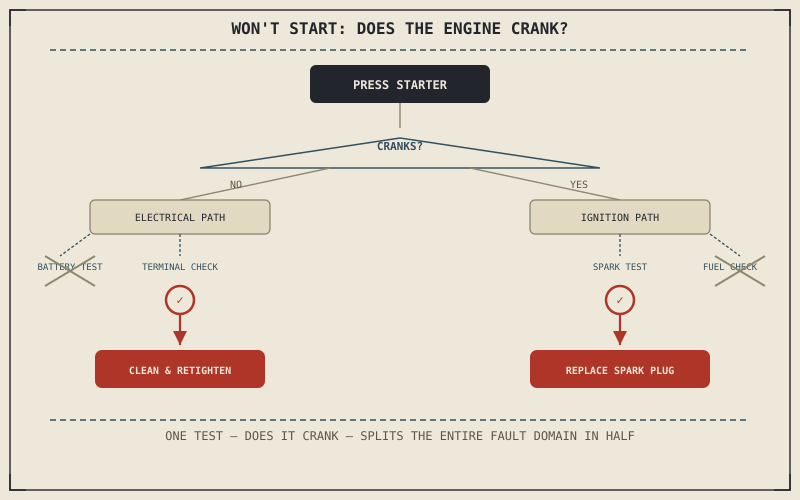

Chapter 11.2 covered an engine that runs, just poorly. A motorcycle that won't start at all is a different problem, and it splits cleanly into two categories the moment you press the starter: does the engine turn over or not? That single observation, made before touching anything else, does more diagnostic work than almost any other check in this book.
Chapter 11.2 closed by pointing here — to a motorcycle that won't run at all, rather than one that runs badly. This chapter picks that up.
The First Test: Does the Engine Crank?
Pressing the starter and listening for what happens next is the single most efficient diagnostic step available for a no-start condition, because it immediately separates two entirely different fault domains. An engine that cranks — turns over audibly, at a normal speed, but never fires — has a healthy starting circuit and a problem somewhere in the combustion chain. An engine that doesn't crank at all, or cranks unusually slowly, has a problem delivering electrical power to the starter motor, before combustion ever becomes relevant. Following Chapter 11.1's method, this one test narrows the entire list of plausible causes in half before a second test is even chosen.
If It Doesn't Crank: The Electrical Path
Chapter 10.7 already described exactly this failure domain: a battery that's self-discharged or developed sulfation from sitting unused, and a genuinely common maintenance misdiagnosis where corroded terminals add resistance at the one connection point every electrical component depends on, producing symptoms that look identical to a weak battery even when the battery itself is healthy. Testing terminal cleanliness and tightness first is the cheaper, faster check, and rules out that specific cause before assuming the more expensive possibility — a battery that actually needs replacing.
Whether the engine cranks at all, before you've touched anything else, splits a no-start condition into two entirely different fault domains — electrical delivery to the starter, or combustion once it's already turning — and that one observation narrows the list of plausible causes before a second test is ever chosen.

A diagnostic flowchart starting from a motorcycle that won't start, branching on whether the engine cranks into an electrical path — battery and terminal checks — or an ignition path — spark and fuel delivery checks — each converging on a confirmed cause.
If It Cranks but Won't Fire: The Ignition Path
An engine that cranks normally but never catches has electrical power reaching the starter, which rules out the entire electrical path Chapter 10.7 described and points instead toward the spark itself. Chapter 2.4 established that the spark plug fires early, at a precisely timed crank angle, to ignite the flame front before the piston reaches the top of its stroke; a fouled spark plug, a failed ignition component, or timing drifted badly enough to fire outside the combustible window can each prevent that spark from doing its job, even though the electrical system delivering current to the starter is working perfectly. A fuel delivery failure — nothing reaching the cylinder at all — produces the identical cranks-but-won't-fire symptom, which is why this path still requires its own targeted test rather than assuming spark is always the culprit once cranking is confirmed.
A Common Misconception, Cleared Up Early
It's a common assumption that any motorcycle that won't start has "a dead battery," treating that as the default explanation regardless of what actually happens when the starter is pressed. Chapter 10.7 already flagged corroded terminals as a frequent cause of exactly this misdiagnosis, and the cranks-but-won't-fire case described above shares none of the electrical system's symptoms at all — a fully charged battery and a perfectly healthy starting circuit sitting behind an engine that simply isn't getting spark or fuel. The one-test branching this chapter opened with exists specifically to prevent that assumption from skipping straight to the wrong repair.
Where This Leads
Starting problems are a snapshot — either the electrical system delivers enough power to crank the engine, or it doesn't, at the moment the starter is pressed. Chapter 11.4 turns to the electrical system's behavior over time: charging faults that develop gradually while the engine runs.
Key Concepts to Remember
- Whether the engine cranks when the starter is pressed splits a no-start condition into an electrical path and an ignition path before any other test is chosen.
- A no-crank condition points to the battery or terminal connections; a cranks-but-won't-fire condition points to spark or fuel delivery instead.
- Assuming "a dead battery" by default skips the one test that would have shown the electrical system was never the problem.
Cross-References
| ← Ch. 11.1 | Established the symptom-cause-test-confirm method; this chapter's crank/no-crank test is a direct application of choosing a test that narrows the list of causes. |
| ← Ch. 10.7 | Established the battery's storage role and terminal corrosion as a common misdiagnosis; this chapter applies both directly to a no-crank condition. |
| ← Ch. 2.4 | Established the spark plug's precisely timed firing; this chapter treats a failure of that spark as the leading cause of a cranks-but-won't-fire condition. |
| → Ch. 11.4 | Covers diagnosing charging and electrical faults that develop while the engine runs. |